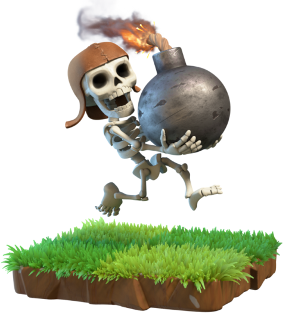
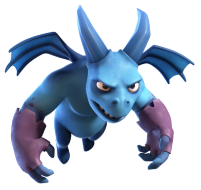

El elixir es un elemento principalmente militar, la materia prima que sirve para construir y mejorar tropas y crear edificios relacionados con tu ejército. Antes de recolectarlo,
necesitas tener oro suficiente para crear sus recolectores y un buen almacén.
El elixir oscuro en lugar de generar tropas básicas, es lo que se utiliza para los Reyes, como el Bárbaro y la Arqueta. También tiene un tipo de edificio
oscuro llamado Cuartel Oscuro.

Las gemas se usan para canjearlo por otros dentro del juego, como elixir u oro. Es tremendamente valioso, de ahí que en los niveles más altos se concentren los usuarios que han pagado por ellas.
Las monedas son unos de los materiales básicos del juego. Sirve para varias cosas, principalmente para construir edificios y tropas y mejorarlos posteriormente.
Lo obtienes en las minas del mismo nombre y lo guardas en su correspondiente almacén de oro.
| Nombre |
Descripción |
Foto |
| BÁRBAROS |
Es la tropa más básica de Clash of Clans. Su principal uso es la distraer a las armas de defensa para que otras tropas las puedan destruir.
Son muy útiles si se crean junto a un gran numero de bárbaros o junto a algunas arqueras y gigantes. |
|
| ARQUERAS |
Las arqueras tienen muy poca vida y por lo tanto es mejor crearlas en gran numero o junto a otras tropas que sirvan de escudo. Son la tropa perfecta si las armas defensivas de la aldea que vas a atacar están lejos de las estructuras a destruir. |
 |
| DUENDE |
Pese a lo que pueda parecer son tropas muy rápidas, tienen más daño que los bárbaros y más vida que las arqueras. Tienen la habilidad de causar el doble de daño a los edificios de recursos. |
 |
| GIGANTE |
Esta tropa se centra siempre en atacar a los construcciones defensivas. Tiene una gran cantidad de vida por lo tanto con varios de ellos tendrás un muro perfecto para defender a tus tropas. |
 |
| ROMPEMUROS |
Esta tropa sirve principalmente para destruir muros pero hay que tener en cuenta que cuando destruyen un muro se autodestruyen. |
 |
| GLOBO |
Los globos son básicamente rompemuros que vuelan. Es recomendable usarlos solo cuando las defensas aéreas hayan sido destruidas o en todo caso acompañarlos por Sabuesos de lava. |
 |
| MAGO |
Los magos atacan a menos distancia que las arqueras pero tienen más daño y vida. Se deben desbloquear separados para evitar que mueran por el daño de morteros. |
|
| CURANDERA |
Es la única tropa que no hace daño sino que cura a tus tropas y cada una puede recibir un máximo de curaciones simultaneas. Es recomendable acompañarlas con gigantes. |
|
| DRAGÓN |
Es una tropa aérea con un daño devastador que ataca a unidades de tierra y voladoras. Tiene una gran distancia de ataque y además sus ataques generan salpicadura de daño. |
 |
| PEKKA |
Es la tropa con mejor armadura y daño del juego, por eso es una de las más elixir pide para crearse. Las Torres Tesla le producen el doble de daño pero es inmune a los hechizos de rayo. El mejor método de crearlos es en pareja en las esquinas de la aldea que vayas a atacar. |
 |
| BEBÉ DRAGÓN |
Esta tropa es exactamente igual que el dragón pero más barata y tiene menos vida. |
|
| MINERO |
Esta tropa ataca simpre a la unidad o defensa más cercana, pero siempre tendrá prioridad por atacar a las tropas. Esta tropa tiene la capacidad de ir bajo tierra para avanzar y además no podrá sufrir daño. |
 |
| ESBIRRO |
Es una tropa que no tiene mucha vida, antes de crearlas es aconsejable haber destruido los Cohetes de defensa, Torres de arqueras y Torres de magos. Funcionan igual que una arquera pero no pueden ser atacados por unidades terrestres. |
 |
| MONTAPUERCOS |
Esta tropa tiene la habilidad de saltar muros, además tiene una gran vida y daño en cuerpo a cuerpo. Hay que tener mucho cuidado con las Bombas gigantes porque les infringen mucho daño. |
|
| VALQUIRIA |
Las valquirias son unas tropas muy fuertes y con una buena cantidad de vida. Tienen la propiedad de causar un gran daño a los héroes. |
|
| GOLEM |
Los golem son una de las tropas con más vida del juego pero con bajo poder de ataque. Es la unidad perfecta para usarse como distracción para que no destruyan al resto de tropas. |
 |
| BRUJA |
Tienen muy poca vida y actúa igual que un mago o las arqueras. Tiene la propiedad de invocar esqueletos para distraer a las estructuras defensivas. Es mejor crearlas con algunas tropas defensivas cerca para que no mueran rápidamente. |
|
| SABUESO DE LAVA |
Estas tropas siempre tendrán como prioridad atacar a las defensas aéreas. Al morir aparecerán los Cachorros de lava, que son iguales pero con menos vida y daño. |
|
| LANZARROCAS |
Es una tropa debil pero con un daño capaz de acabar con una tropa de bárbaros con una sola roca. |
 |